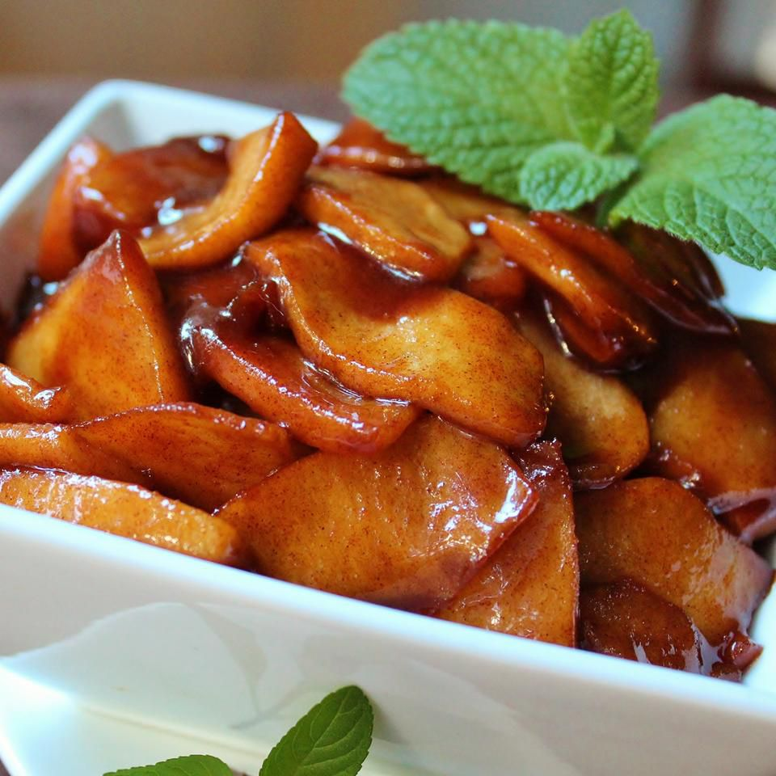

Southern Fried Apples

These fried apples are a delicious way to sweeten breakfast — or any meal.
An easy, fail-proof way to make the best southern fried apples.
Ingredients
- ½ cup butter
- ½ cup white sugar
- 2 tablespoons ground cinnamon, or to taste
- 4 Granny Smith apples - peeled, cored, and sliced
Steps
- Melt butter in a large skillet over medium heat. Add sugar and cinnamon; stir until sugar dissolves.
- Add apples and cook until softened, 5 to 8 minutes.
return to main page